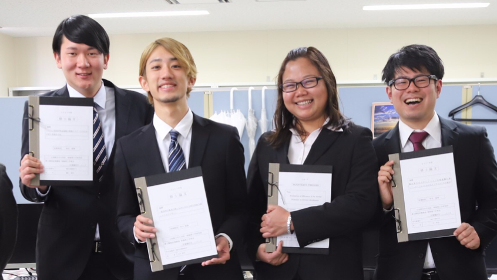

コース概要
先端社会デザインコースで学べること
先端社会デザインコース（FSDコース）では未来の情報技術社会に必要な、データサイエンス技術、インタラクション技術、デザインサイエンス技術について学びます。
これらの３つの技術はみなさんの身近なところで使われています。 例えば、データサイエンス技術の中には、大量のアンケートデータを分析し、顧客のニーズをつかむ技術が含まれます。
インタラクション技術とは、AmazonやGoogleのAIスピーカやLINEやMicrosoftのチャットボットなど、人間と機械の対話を実現する技術がその一例となります。
デザインサイエンス技術だと、人の認知を考慮して使いやすいものを設計することや、色々なアイデアが次々と出るような議論の場をデザインすることなどがあげられます。
カリキュラム
コース固有の科目について紹介をします。
1回生後期
- ハイフンでの箇条書き(Lv1)
- 入れ子ハイフンでの箇条書き(Lv2)
- 入れ子ハイフンでの箇条書き(Lv3)
- 入れ子ハイフンでの箇条書き(Lv4)
- 入れ子ハイフンでの箇条書き(Lv3)
- 入れ子ハイフンでの箇条書き(Lv2)